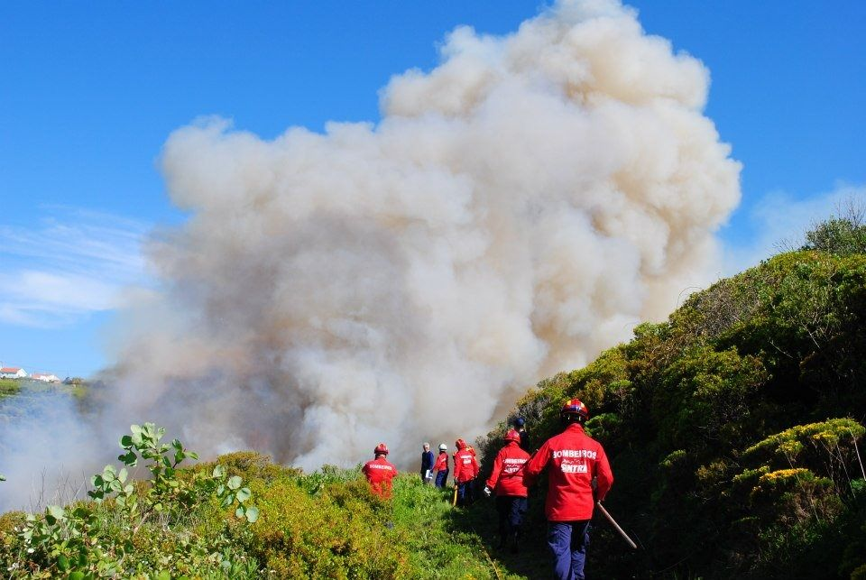
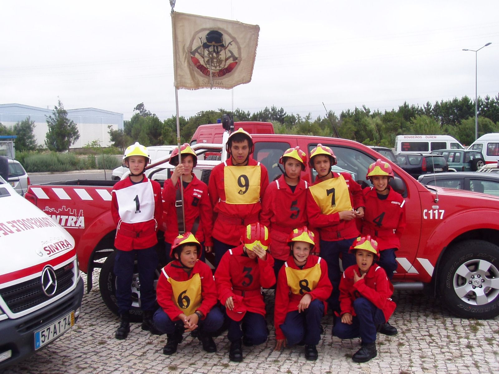
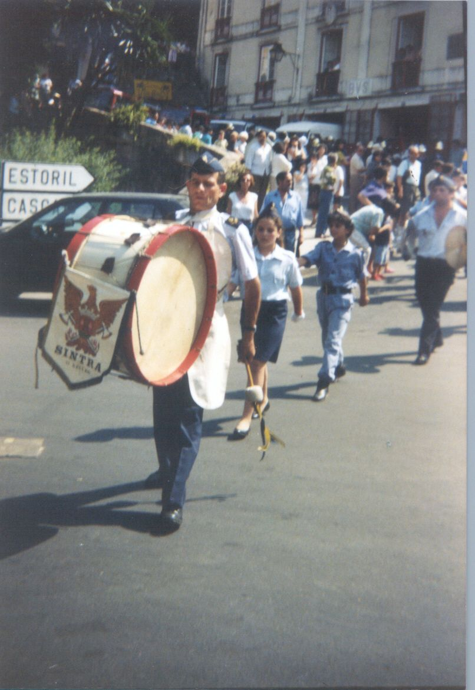

Notícias
Atualidade
O que se passa no quartel
Provisório Estas notícias são exemplos. As notícias reais são publicadas no Facebook da associação.

12 set 2026Balanço da época de incêndios na Serra de Sintra
Provisório Resumo de exemplo. As notícias reais são publicadas no Facebook.
Ler mais
28 ago 2026Novos cadetes iniciam a formação no quartel
Provisório Resumo de exemplo. As notícias reais são publicadas no Facebook.
Ler mais
15 ago 2026Fanfarra atua nas festas do concelho
Provisório Resumo de exemplo. As notícias reais são publicadas no Facebook.
Ler maisFacebook
Acompanhe-nos em tempo real
Ocorrências, avisos à população, formações e eventos são publicados em primeira mão na nossa página de Facebook.
Ver página no Facebook